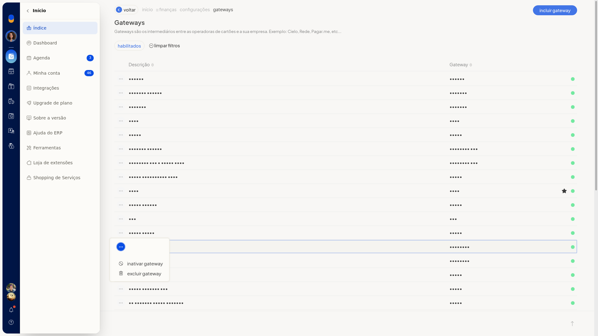
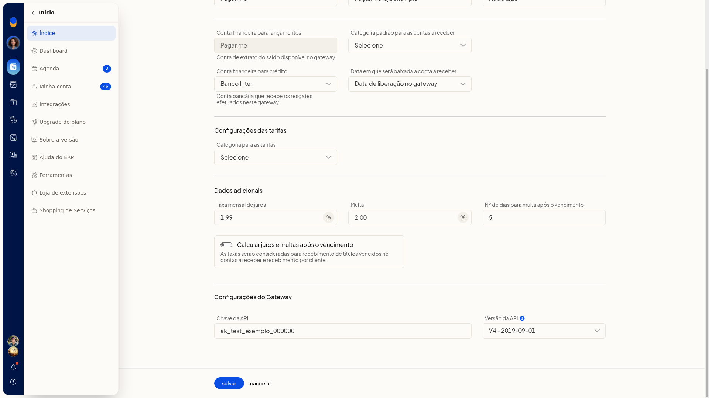
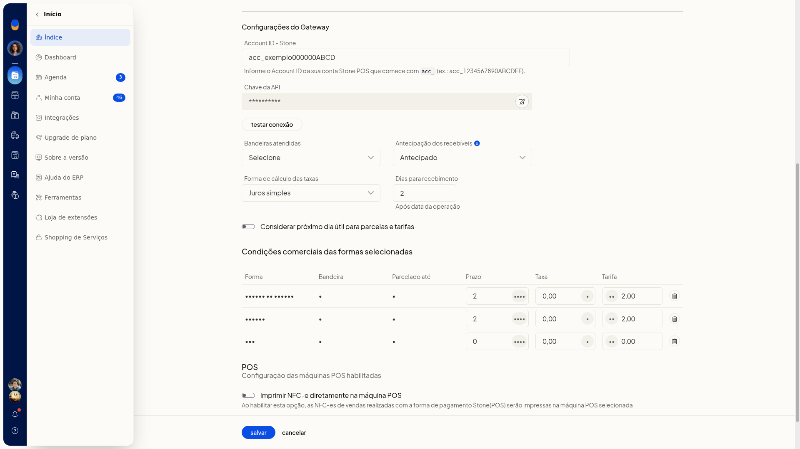
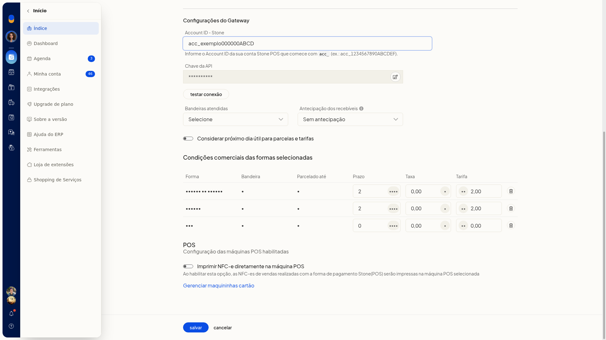

Gateways de pagamento (Pagar.me e outros)
No ERP da Olist, o cadastro de gateways conecta a empresa aos meios de pagamento, em especial Pagar.me e Stone POS. Você informa as credenciais, a conta que recebe os resgates e as regras de juros, multa, baixa e antecipação.
A tela fica em Configurações > Configurações ERP > Finanças > Cadastro de gateways. No campo Gateway também entram Pagar.me 2.0, Wirecard, Cielo, Rede, Getnet, SafraPay, PagBank, Vero, Bin, Sicredi, Caixa, Sipag, PicPay, Redeflex e Outro.
Pré-requisitos
- Para Pagar.me: chave da API e a versão da API da conta.
- Para Stone POS: Account ID que comece com acc_ e a chave da API da conta Stone.
- Se a opção não aparecer para você, peça acesso ao administrador da conta.
Importante
- O Account ID - Stone precisa começar com acc_.
- Inativar gateway e Excluir gateway, no menu da linha, desativam ou removem o gateway. Use só quando quiser esse efeito.
- Banco Inter não é um gateway nesta tela. Ele aparece como conta financeira para crédito.
Instruções
-
Acesse Configurações > Configurações ERP > Finanças > Cadastro de gateways. A lista mostra Descrição e Gateway, o filtro habilitados e Incluir gateway.

-
No menu da linha de um gateway já cadastrado, as opções são Ações, Inativar gateway e Excluir gateway.

-
Clique em Incluir gateway.
-
Em Gateway, selecione Pagar.me ou Stone POS. Os campos abaixo não estão marcados como obrigatórios.
Pagar.me
-
Preencha Descrição do gateway e Situação (Habilitado ou Desabilitado). A conta de extrato é sugerida com o nome do gateway.
-
Escolha a Categoria padrão para as contas a receber, a Conta financeira para crédito e a Categoria para as tarifas. Banco Inter está entre as contas de crédito.
-
Em Data em que será baixada, escolha Data de liberação no gateway ou Data de pagamento da conta a receber (beta).

-
Informe a Taxa mensal de juros e a Multa em percentual, o N° de dias para multa e, se quiser, marque Calcular juros e multas.
-
Informe a Chave da API e a Versão da API: V4 - 2019-09-01, V3 - 2017-08-28, V2 - 2017-07-17 ou V1 - 2013-03-01.
-
Clique em Salvar para gravar o gateway Pagar.me.

Stone POS
-
Informe a descrição, a situação e a Conta financeira para lançamentos. Essa conta é o extrato do saldo disponível no gateway.
-
Escolha a Categoria padrão para as contas a receber e a Conta financeira para crédito, a conta bancária que recebe os resgates deste gateway. Banco Inter está nessa lista.
-
Em Baixar contas a receber automaticamente, escolha Manual, Data de vencimento da conta a receber ou Data da efetivação da venda.
-
Em configurações do gateway, informe o Account ID - Stone (começa com acc_) e a Chave da API. O botão Testar conexão fica na tela.
-
Escolha as Bandeiras atendidas e a Antecipação dos recebíveis: Sem antecipação ou Antecipado. Em Antecipado, informe a Forma de cálculo das taxas (Juros simples ou Valor presente) e os Dias para recebimento, contados após a data da operação.

-
Use o interruptor Considerar próximo dia útil para parcelas e tarifas se quiser esse ajuste. A seção Condições comerciais das formas selecionadas lista Forma, Bandeira, Parcelado até, Prazo, Taxa e Tarifa.
-
Em POS, o interruptor Imprimir NFC-e diretamente na máquina POS faz as NFC-e da forma Stone(POS) saírem na máquina selecionada. O link Gerenciar maquininhas cartão abre as maquininhas.
-
Clique em Salvar para gravar o gateway Stone POS.

Informações adicionais
- A lista de gateways mostra a descrição e o gateway, com o filtro habilitados.
- Inativar gateway aparece apenas para gateways habilitados. Ativar gateway aparece apenas para gateways desabilitados.
- Neste caminho não há importação por planilha.